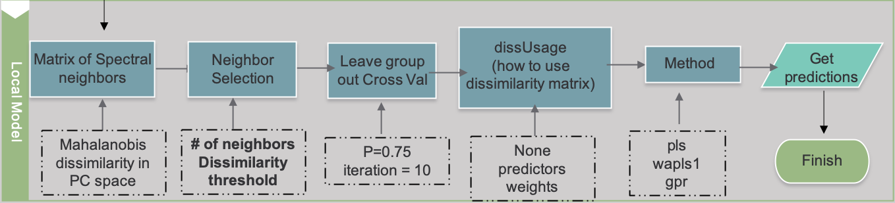
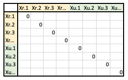
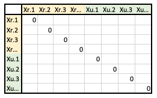

6 MBL Models
6.1 Model Theory
Overview
Memory-Based Learning (MBL) is a local modeling approach that can be used to predict a given soil property from a set of spectral data, the prediction set.
Like PLS, this approach relies on a reference set, containing both spectral data and known values for the soil property of interest (ie. Organic Carbon).
While PLS create a single global model which can be applied to all samples in the prediction set, MBL makes a local model for each prediction.
Local models are built from a sample’s nearest neighbors: samples in the reference set that are most similar to the sample being predicted.
Similarity is measured by spectral similarity, which should reflect similarities in soil composition. Since each sample has a customized model, predictions are often more accurate than PLS predictions.
However, MBL models can be quite computationally intensive since
1) A model is built for each sample being predicted
2) All samples in the prediction and reference set must be related in terms of similarity
Animation
The animation below illustrates how local modeling works in MBL. It is shown in multidimensional space since each spectral column is a dimension of the dataset.

A Shows all the samples in the prediction set (red), overlaying all the samples in the reference set (gray)
B Shows a circle indicating the nearest neighbors of a sample being predicted
C Shows all the samples of the prediction set with their respective nearest neighbors
D Shows how local models will be created for each prediction from these nearest neighbors
Resemble Powerpoint: http://www.fao.org/fileadmin/user_upload/GSP/docs/Spectroscopy_dec13/SSW2013_f.pdf
6.2 Making MBL Predictions
MBL Functions
Full documentation on the mbl() function of the resemble package can be found below, or by typing ??resemble in r:
MBL- https://www.rdocumentation.org/packages/resemble/versions/1.2.2/topics/mbl
mbl(Yr, Xr, Yu = NULL, Xu,
mblCtrl = mblControl(),
dissimilarityM,
group = NULL,
dissUsage = "predictors",
k, k.diss, k.range,
method,
pls.c, pls.max.iter = 1, pls.tol = 1e-6,
noise.v = 0.001,
...)MBL Control- https://www.rdocumentation.org/packages/resemble/versions/1.2.2/topics/mblControl
mblControl(sm = "pc",
pcSelection = list("opc", 40),
pcMethod = "svd",
ws = if(sm == "movcor") 41,
k0,
returnDiss = FALSE,
center = TRUE,
scaled = TRUE,
valMethod = c("NNv", "loc_crossval"),
localOptimization = TRUE,
resampling = 10,
p = 0.75,
range.pred.lim = TRUE,
progress = TRUE,
cores = 1,
allowParallel = TRUE)Modeling Parameters
This section explains some of the main ways to customize and optimize mbl models using mbl() in the resemble package. Below is an example workflow for modeling with MBL after the preprocessing steps have been completed:

Input Datasets
- The
mbl()function accepts 4 different data products,XuXrYuandYr, summarized in the table below:

- Both Xs are matrices with spectral data and both Ys are vectors with lab data for the property of interest.
- u indicates “uncertain” for our prediction set, and r indicates “reference” for our reference set.
Yuis optional, since not all prediction sets will have associated lab data. If this is the case, setYutoNULL.- See the data preprocessing tab to prepare these datasets prior to modeling. In addition, it is necessary to remove all rows in the reference set inputs (
YrandXr) that haveNAvalues. If you would like to includeYubut there are missing values, you must also remove those rows in both prediction set inputs (YuandXu).- Number of columns in
Xrmust equal that ofXu. - Number of rows in
Yrmust equal that ofYu, if provided.
- Number of columns in
Matrix of Spectral Neighbors
When selecting nearest neighbors to build a local model, the
mbl()function references a spectral dissimilarity matrix, which relates samples in the prediction and reference sets.This matrix can be created by setting the
smparameter inmblControl(), or can be passed into thembl()function asdissimilarityMif a matrix has already been made.- For creating the matrix, you will have to decide how spectral dissimilarity will be calculated by setting a couple variables in mblControl():
smcan be set to a variety of different methods for measuring distance in a multidimensional space. We have used"pls" "pc" "euclid" "cosine" "cor" and "movcor"pcSelectiondetermines how the number of principal components will be chosen for calculating Mahalonobis dissimilarity (when sm = “pc”, “loc.pc”, “pls” or “loc.pls”)- We have this set to the default options of
(opc,40)meaning the optimal principal component method will be used and up to 40 components will be tested.
.
- We have this set to the default options of
- Lastly, you can specify how the matrix will be used within the local models, if at all, by setting the
dissUsageparameter to"weights" "predictors" or "none".- If set to
"predictors", the column of the matrix which shows similarity to the sample being predicted, will be added as a predictor variable to build the local model.
- If set to
"weights", the neighbors are weighted based on dissimilarity/distance (those closer to the sample being predicted receive more weight in the model).
.
- If set to
- The matrix format will look like one of the following, depending on how it will be used…
- A. All reference and prediction sets samples as rows and columns (“predictors”)

- B. Reference set samples as rows, prediction set samples as columns (“weights”)

- A. All reference and prediction sets samples as rows and columns (“predictors”)

Neighbor Selection
- The
mbl()function allows you to specify how many nearest neighbors will be used to build local models, by setting eitherk, ork.dissandk.range.- Option 1: Set
kto a sequence of numbers to test, for how many neighbors to include.seq(40, 40, by=20), would perform 1 iteration, using 40 nearest neighborsseq(40, 100, by=20), would perform 4 iterations, using 40, 60, 80 and 100 nearest neighbors
- Option 2:
- Set a dissimilarity threshold
k.dissthat limits the distance to search for neighbors from a sample. You can think of it as the radius of the circles shown in the model theory animation.

- Set
k.rangeto the minimum and maximum number of neighbors you want to include, within thek.dissdistance.
- Set a dissimilarity threshold
- Option 1: Set
Modeling Method
- Once neighbors are selected, MBL builds local models using the multivariate regression method specified with the variable
methodin thembl()function.plsfor partial least squares regressionwapls1for weighted average plsgprfor gaussian process with dot product covariance
pls.callows you to set the number of pls components to be used if either “pls” or “wasp1” is used.- A single number if
plsis used - A vector containing the minimum and maximum number of components to be used, if
wasp1is used
- A single number if
Validation Method
- You can specify the validation method by setting the parameter
valMethodwithin themblControl()function.NNvfor leave-nearest-neighbour-out cross validationloc_crossvalfor local leave group out cross validationnoneIf you chose not to validate the model. This will improve processing speed.
Other
Should I include this section?
centerscaled
Sample Code
Define Input Data
Example 1
ctrl <- mblControl(sm = 'pc', pcSelection = list('opc', 50),
valMethod = 'loc_crossval',center=TRUE,scale=FALSE,allowParallel=FALSE)
mbl.sqrt <- mbl(Yr = Yr, Xr = Xr, Yu = Yu, Xu = Xu, mblCtrl = ctrl, dissUsage = 'none',
k = seq(40, 100, by = 20),
method = 'pls', pls.c = 6)
predVals <- c(mbl.sqrt$results$Nearest_neighbours_40$pred)^2Example 2
diss2test <- seq(0.3, 1, by=0.1)
kminmax <- c(10, nrow(calib$spc))
pls.f <- c(minpls=3, maxpls=20)
ctrl <- mblControl(sm = pls, pcSelection = list("opc", 50), valMethod = "NNv",
returnDiss = TRUE, scaled = FALSE, center = TRUE)
mbl.sqrt <- mbl(Yr = Yr, Xr = Xr, Xu = Xu, mblCtrl = ctrl, dissUsage = "none", k.diss = diss2test, k.range = kminmax, pls.c = pls.f, method = "wapls1")
idx.best.ca <- which.min(mbl.sqrt$nnValStats$st.rmse)
best.kdiss.ca <- mbl.sqrt$nnValStats$k.diss[idx.best.ca]
predVals <- c(getPredictions(mbl.sqrt)[, idx.best.ca])^2Model Output
- Cross Validation Statistics
- Prediction Statistics:
- If Yu, lab data for the prediction set is provided, it will calculate how well the models predicted in terms of rmse, st.rmse and r2